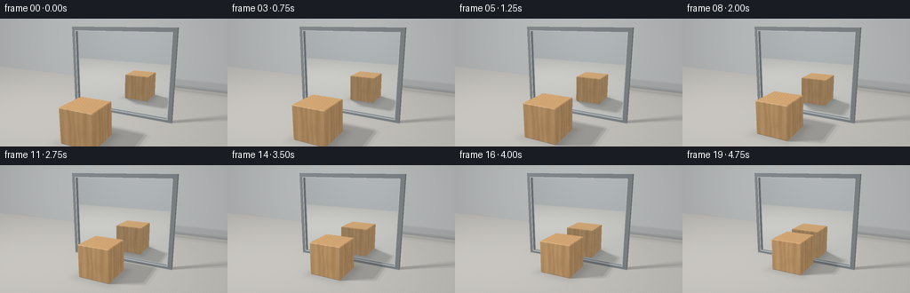
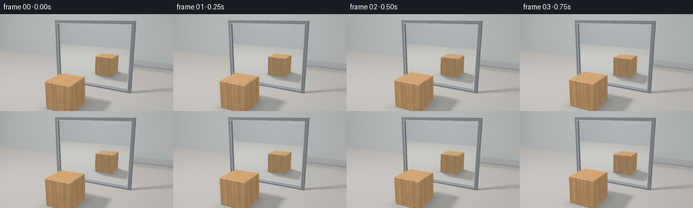
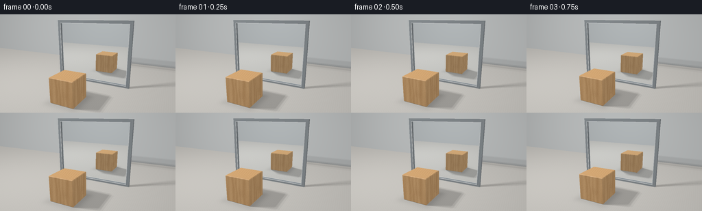
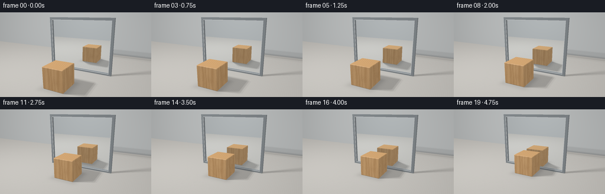

CODING AGENTS AS PIXEL WORLD MODELS
traex/GPT-6.1-Sol · phygen_061
点击播放 · 原生 RGB 像素
逐轮保存的候选
回放视频、检查图与代码变化。
每份候选均可单独播放。实际图片检查记录在下方工具轨迹中。
候选 01播放与检查图
点击播放 · 原生 RGB 像素


展开代码变化
--- 上一保存版本
+++ 本次保存版本
@@ -0,0 +1,188 @@
+"""Text-only procedural renderer: a wood cube approaching a planar mirror.
+Uses numpy geometry, analytic ray intersections, procedural grain and soft lighting.
+"""
+from pathlib import Path
+import json
+import numpy as np
+from PIL import Image
+import artifact_io
+
+ROOT=Path(__file__).resolve().parent
+SPEC=json.loads((ROOT/'task_spec.json').read_text())
+W,H=SPEC['width'],SPEC['height']
+SS=3
+CAM=np.array([3.4,-7.4,3.3])
+TARGET=np.array([0.,-.5,1.3])
+F=TARGET-CAM; F/=np.linalg.norm(F)
+R=np.cross(F,[0,0,1.]); R/=np.linalg.norm(R)
+U=np.cross(R,F)
+yy,xx=np.mgrid[0:H*SS,0:W*SS]
+D=F+(xx[...,None]+.5-W*SS/2)/(260*SS)*R-(yy[...,None]+.5-H*SS/2)/(260*SS)*U
+D=D.reshape(-1,3);D/=np.linalg.norm(D,axis=1)[:,None]
+LIGHT=np.array([-3.8,-4.0,6.0])
+
+# Halfspaces for a finely beveled timber cube, with actual chamfer highlights.
+PLANES=[]
+for i in range(3):
+ for s in [-1,1]:
+ n=np.zeros(3);n[i]=s;PLANES.append((n,.54))
+for i,j in [(0,1),(0,2),(1,2)]:
+ for a in [-1,1]:
+ for b in [-1,1]:
+ n=np.zeros(3);n[i]=a;n[j]=b;n/=np.sqrt(2);PLANES.append((n,(1.08-.023)/np.sqrt(2)))
+for a in [-1,1]:
+ for b in [-1,1]:
+ for c in [-1,1]:
+ PLANES.append((np.array([a,b,c])/np.sqrt(3),(1.62-.037)/np.sqrt(3)))
+PN=np.array([p[0] for p in PLANES])
+
+def cube_hit(o,d,center):
+ q=o-center
+ enter=np.full(len(d),-1e8);leave=np.full(len(d),1e8);ni=np.zeros(len(d),np.int32)
+ for k,(n,dist) in enumerate(PLANES):
+ den=d@n; num=dist-q@n
+ v=num/np.where(abs(den)>1e-9,den,1e-9)
+ e=(den<0)&(v>enter)
+ enter=np.where(e,v,enter);ni=np.where(e,k,ni)
+ leave=np.where(den>0,np.minimum(leave,v),leave)
+ leave=np.where((abs(den)<1e-9)&(num<0),-1e8,leave)
+ ok=(enter<=leave)&(enter>1e-5)
+ return np.where(ok,enter,np.inf),PN[ni]
+
+def box_hit(o,d,lo,hi):
+ inv=1/np.where(abs(d)>1e-9,d,1e-9)
+ a=(lo-o)*inv;b=(hi-o)*inv
+ ns=np.minimum(a,b);fs=np.maximum(a,b)
+ ent=np.max(ns,axis=1);ext=np.min(fs,axis=1)
+ axis=np.argmax(ns,axis=1)
+ norm=np.zeros_like(d);norm[np.arange(len(d)),axis]=-np.sign(d[np.arange(len(d)),axis])
+ return np.where((ext>=ent)&(ent>1e-5),ent,np.inf),norm
+
+FRAME=[([-1.96,-.075,0],[-1.81,.085,3.15]),([1.81,-.075,0],[1.96,.085,3.15]),([-1.81,-.075,3.0],[1.81,.085,3.15]),([-1.81,-.075,0],[1.81,.085,.10])]
+# narrow inner trim gives the silver glass a crisp specular boundary
+TRIM=[([-1.825,-.085,.1],[-1.803,-.060,3.01]),([1.803,-.085,.1],[1.825,-.060,3.01]),([-1.825,-.085,2.994],[1.825,-.060,3.015]),([-1.825,-.085,.087],[1.825,-.060,.108])]
+
+def trace(o,d,center,mirror=True):
+ n=len(d);t=np.full(n,np.inf);norm=np.zeros((n,3));mat=np.zeros(n,np.int32)
+ def put(tt,nn,m):
+ nonlocal t,norm,mat
+ hit=tt<t;t[hit]=tt[hit];norm[hit]=nn[hit];mat[hit]=m
+ # floor, with a clean tabletop-like matte surface
+ tf=-o[:,2]/np.where(abs(d[:,2])>1e-9,d[:,2],1e-9)
+ nn=np.zeros_like(d);nn[:,2]=1;put(np.where(tf>1e-5,tf,np.inf),nn,1)
+ # room walls
+ for by,bn in [(4.5,-1),(-11.,1)]:
+ tt=(by-o[:,1])/np.where(abs(d[:,1])>1e-9,d[:,1],1e-9)
+ nn=np.zeros_like(d);nn[:,1]=bn;put(np.where(tt>1e-5,tt,np.inf),nn,2)
+ tt,nn=cube_hit(o,d,center);put(tt,nn,3)
+ for a,b in FRAME:
+ tt,nn=box_hit(o,d,np.array(a),np.array(b));put(tt,nn,4)
+ for a,b in TRIM:
+ tt,nn=box_hit(o,d,np.array(a),np.array(b));put(tt,nn,5)
+ if mirror:
+ tm=-o[:,1]/np.where(abs(d[:,1])>1e-9,d[:,1],1e-9)
+ p=o+d*tm[:,None]
+ valid=(tm>1e-5)&(p[:,0]>-1.81)&(p[:,0]<1.81)&(p[:,2]>.10)&(p[:,2]<3.0)
+ nn=np.zeros_like(d);nn[:,1]=-1;put(np.where(valid,tm,np.inf),nn,6)
+ p=o+d*np.minimum(t,1e4)[:,None]
+ return t,p,norm,mat
+
+def wood(p,n,center):
+ q=p-center
+ # Longitudinal grain runs vertically; different end-grain on the top.
+ side=np.argmax(abs(n),axis=1)
+ coord=np.where(side==0,q[:,1],q[:,0])
+ v=q[:,2]
+ warp=coord+.015*np.sin(v*5+coord*8)+.009*np.sin(v*12+coord*17)
+ # restrained oak ribbons, narrow dark pores, and gentle natural variation
+ broad=np.sin(warp*34+1.3*np.sin(warp*8))
+ fine=np.sin(warp*145+1.8*np.sin(v*3+warp*13))
+ pores=np.maximum(0,np.sin(warp*267+np.sin(v*12)))**18
+ grain=.035*broad+.016*fine-.06*pores+.025*np.sin(coord*13+v*1.5)
+ # visible growth rings on the upper end-grain face
+ radius=np.sqrt((q[:,0]+1.35)**2+(.9*q[:,1]+.22)**2)
+ rings=np.sin(radius*65+1.2*np.sin(q[:,1]*9))
+ end=.027*rings-.031*np.maximum(0,rings)**8+.016*np.sin(radius*160)
+ grain=np.where(side==2,end,grain)
+ base=np.tile(np.array([.61,.365,.165]),(len(p),1))
+ base+=grain[:,None]*np.array([1.,.8,.49])
+ # a small elliptical knot on one side, seamlessly carried along with the cube
+ rr=np.sqrt(((coord-.16)/.11)**2+((v+.08)/.19)**2)
+ knot=np.exp(-rr*rr)*.055 + np.exp(-rr*rr/3)*.015*np.cos(rr*15)
+ base-=np.where(side!=2,knot,0)[:,None]*np.array([1.,.77,.43])
+ return np.clip(base,.025,1)
+
+rng=np.random.default_rng(130)
+OFF=rng.uniform(-.65,.65,(6,2))
+def shade(p,n,mat,d,center):
+ size=len(p);base=np.zeros((size,3))
+ floor=mat==1;wall=mat==2;woodmask=mat==3;frame=mat==4;trim=mat==5
+ # low-contrast matte limestone surface with extremely subtle material texture
+ pattern=.007*np.sin(p[:,0]*83+np.sin(p[:,1]*61))+.004*np.sin(p[:,1]*143+p[:,0]*119)
+ base[floor]=np.array([.52,.505,.475])+pattern[floor,None]
+ base[wall]=np.array([.46,.475,.475])
+ if woodmask.any():base[woodmask]=wood(p[woodmask],n[woodmask],center)
+ base[frame]=np.array([.24,.265,.28])
+ base[trim]=np.array([.58,.60,.61])
+ ld=LIGHT-p;dist=np.linalg.norm(ld,axis=1);ld/=dist[:,None]
+ diffuse=np.maximum(0,np.sum(n*ld,axis=1))
+ vis=np.zeros(size)
+ # soft shadows by testing several fixed points across the area light
+ for offset in OFF:
+ lp=LIGHT+np.array([offset[0],offset[1],0])
+ sd=lp-p;dl=np.linalg.norm(sd,axis=1);sd/=dl[:,None]
+ oo=p+n*.001
+ ct,_=cube_hit(oo,sd,center)
+ blocked=ct<dl
+ # mirror rails cast narrow realistic shadows too
+ for a,b in FRAME:
+ ft,_=box_hit(oo,sd,np.array(a),np.array(b))
+ blocked|=ft<dl
+ vis+=~blocked
+ vis/=len(OFF)
+ ambient=.54+.12*n[:,2]
+ # contact darkening beneath the block; reflected rays use this same ground
+ dx=np.maximum(abs(p[:,0]-center[0])-.54,0)
+ dy=np.maximum(abs(p[:,1]-center[1])-.54,0)
+ ao=np.exp(-(dx*dx+dy*dy)/.06)
+ ambient-=np.where(floor,.16*ao,0)
+ # emphasize the upright mirror's resting contact with the surface
+ ambient-=np.where(floor,.1*np.exp(-(p[:,1]/.13)**2)*(abs(p[:,0])<1.99),0)
+ col=base*(ambient+.57*diffuse*vis)[:,None]
+ hvec=ld-d;hvec/=np.linalg.norm(hvec,axis=1)[:,None]
+ sp=np.maximum(0,np.sum(n*hvec,axis=1))
+ gloss=np.where(woodmask,.075,np.where(frame,.38,np.where(trim,.7,.022)))
+ exponent=np.where(woodmask,48,np.where(frame|trim,90,34))
+ col+=((sp**exponent)*gloss*vis)[:,None]*np.array([1.,.965,.90])
+ return np.clip(col,0,1)
+
+def render(index):
+ # Constant speed closes the physical gap without turning or changing scale.
+ t=index/(SPEC['frames']-1)
+ center=np.array([0.,-2.26+1.54*t,.54])
+ o=np.broadcast_to(CAM,D.shape)
+ _,p,n,mat=trace(o,D,center)
+ col=np.zeros_like(D)
+ normal=mat!=6
+ col[normal]=shade(p[normal],n[normal],mat[normal],D[normal],center)
+ m=mat==6
+ if m.any():
+ rd=D[m].copy();rd[:,1]*=-1
+ ro=p[m]+rd*.0001
+ _,rp,rn,rm=trace(ro,rd,center,False)
+ reflected=shade(rp,rn,rm,rd,center)
+ # Silver mirror: nearly full contrast, a very slight cool glass tint.
+ col[m]=reflected*np.array([.935,.965,.985])+.008
+ # Gentle photographic tone, warm light, stable optical vignette.
+ col=np.clip(col,0,1)**(1/2.2)
+ vign=1-.10*((xx.reshape(-1)/(W*SS)-.5)**2+(yy.reshape(-1)/(H*SS)-.5)**2)
+ col*=vign[:,None]
+ im=Image.fromarray(np.uint8(np.clip(col.reshape(H*SS,W*SS,3)*255,0,255)))
+ return np.array(im.resize((W,H),Image.Resampling.LANCZOS))
+
+if __name__=='__main__':
+ frames=[]
+ for i in range(SPEC['frames']):
+ frames.append(render(i));print(f'rendered {i+1}/{SPEC["frames"]}',flush=True)
+ artifact_io.save(np.stack(frames),ROOT)
+ print('Saved RGB video and inspection artifacts.')
候选 02播放与检查图
点击播放 · 原生 RGB 像素


展开代码变化
--- 上一保存版本 +++ 本次保存版本 @@ -12,12 +12,12 @@ W,H=SPEC['width'],SPEC['height'] SS=3 CAM=np.array([3.4,-7.4,3.3]) -TARGET=np.array([0.,-.5,1.3]) +TARGET=np.array([0.,-.5,1.12]) F=TARGET-CAM; F/=np.linalg.norm(F) R=np.cross(F,[0,0,1.]); R/=np.linalg.norm(R) U=np.cross(R,F) yy,xx=np.mgrid[0:H*SS,0:W*SS] -D=F+(xx[...,None]+.5-W*SS/2)/(260*SS)*R-(yy[...,None]+.5-H*SS/2)/(260*SS)*U +D=F+(xx[...,None]+.5-W*SS/2)/(240*SS)*R-(yy[...,None]+.5-H*SS/2)/(240*SS)*U D=D.reshape(-1,3);D/=np.linalg.norm(D,axis=1)[:,None] LIGHT=np.array([-3.8,-4.0,6.0])
可观测工具轨迹
实际执行的命令与返回图片。
命令 1exit 0
/bin/bash -lc 'ls -la && cat prompt.txt && cat GENERATION_RULES.md && cat task_spec.json'
命令 2exit 0
/bin/bash -lc 'cat artifact_io.py && cat player_template.html'
命令 3exit 0
/bin/bash -lc "python - <<'PY' import numpy as np C=np.array([3.6,-6.6,3.1]);T=np.array([0,-.6,1.3]); f=(T-C);f=f/np.linalg.norm(f);r=np.cross(f,[0,0,1]);r=r/np.linalg.norm(r);u=np.cross(r,f) for p in [[-1.8,0,0],[1.8,0,0],[1.8,0,3.2],[-1.8,0,3.2],[0,-3,0],[0,-3,1],[0,3,1],[0,-.7,0],[0,-.7,1],[0,.7,1]]: v=np.array(p)-C; print(p, np.round([128+240*np.dot(v,r)/np.dot(v,f),72-240*np.dot(v,u)/np.dot(v,f)],1)) PY"
命令 4exit 0
/bin/bash -lc "python - <<'PY' import numpy as np C=np.array([3.4,-7.4,3.3]);T=np.array([0,-.5,1.3]); f=(T-C);f=f/np.linalg.norm(f);r=np.cross(f,[0,0,1]);r=r/np.linalg.norm(r);u=np.cross(r,f) for p in [[-1.95,0,0],[1.95,0,0],[1.95,0,3.12],[-1.95,0,3.12],[0,-2.3,0],[0,-2.3,1.1],[0,2.3,1.1],[0,-.73,0],[0,-.73,1.1],[0,.73,1.1]]: v=np.array(p)-C; print(p, np.round([128+260*np.dot(v,r)/np.dot(v,f),72-260*np.dot(v,u)/np.dot(v,f)],1)) PY"
命令 5exit 0
/bin/bash -lc "cat > generate.py <<'PY'
\"\"\"Text-only procedural renderer: a wood cube approaching a planar mirror.
Uses numpy geometry, analytic ray intersections, procedural grain and soft lighting.
\"\"\"
from pathlib import Path
import json
import numpy as np
from PIL import Image
import artifact_io
ROOT=Path(__file__).resolve().parent
SPEC=json.loads((ROOT/'task_spec.json').read_text())
W,H=SPEC['width'],SPEC['height']
SS=3
CAM=np.array([3.4,-7.4,3.3])
TARGET=np.array([0.,-.5,1.3])
F=TARGET-CAM; F/=np.linalg.norm(F)
R=np.cross(F,[0,0,1.]); R/=np.linalg.norm(R)
U=np.cross(R,F)
yy,xx=np.mgrid[0:H*SS,0:W*SS]
D=F+(xx[...,None]+.5-W*SS/2)/(260*SS)*R-(yy[...,None]+.5-H*SS/2)/(260*SS)*U
D=D.reshape(-1,3);D/=np.linalg.norm(D,axis=1)[:,None]
LIGHT=np.array([-3.8,-4.0,6.0])
# Halfspaces for a finely beveled timber cube, with actual chamfer highlights.
PLANES=[]
for i in range(3):
for s in [-1,1]:
n=np.zeros(3);n[i]=s;PLANES.append((n,.54))
for i,j in [(0,1),(0,2),(1,2)]:
for a in [-1,1]:
for b in [-1,1]:
n=np.zeros(3);n[i]=a;n[j]=b;n/=np.sqrt(2);PLANES.append((n,(1.08-.023)/np.sqrt(2)))
for a in [-1,1]:
for b in [-1,1]:
for c in [-1,1]:
PLANES.append((np.array([a,b,c])/np.sqrt(3),(1.62-.037)/np.sqrt(3)))
PN=np.array([p[0] for p in PLANES])
def cube_hit(o,d,center):
q=o-center
enter=np.full(len(d),-1e8);leave=np.full(len(d),1e8);ni=np.zeros(len(d),np.int32)
for k,(n,dist) in enumerate(PLANES):
den=d@n; num=dist-q@n
v=num/np.where(abs(den)>1e-9,den,1e-9)
e=(den<0)&(v>enter)
enter=np.where(e,v,enter);ni=np.where(e,k,ni)
leave=np.where(den>0,np.minimum(leave,v),leave)
leave=np.where((abs(den)<1e-9)&(num<0),-1e8,leave)
ok=(enter<=leave)&(enter>1e-5)
return np.where(ok,enter,np.inf),PN[ni]
def box_hit(o,d,lo,hi):
inv=1/np.where(abs(d)>1e-9,d,1e-9)
a=(lo-o)*inv;b=(hi-o)*inv
ns=np.minimum(a,b);fs=np.maximum(a,b)
ent=np.max(ns,axis=1);ext=np.min(fs,axis=1)
axis=np.argmax(ns,axis=1)
norm=np.zeros_like(d);norm[np.arange(len(d)),axis]=-np.sign(d[np.arange(len(d)),axis])
return np.where((ext>=ent)&(ent>1e-5),ent,np.inf),norm
FRAME=[([-1.96,-.075,0],[-1.81,.085,3.15]),([1.81,-.075,0],[1.96,.085,3.15]),([-1.81,-.075,3.0],[1.81,.085,3.15]),([-1.81,-.075,0],[1.81,.085,.10])]
# narrow inner trim gives the silver glass a crisp specular boundary
TRIM=[([-1.825,-.085,.1],[-1.803,-.060,3.01]),([1.803,-.085,.1],[1.825,-.060,3.01]),([-1.825,-.085,2.994],[1.825,-.060,3.015]),([-1.825,-.085,.087],[1.825,-.060,.108])]
def trace(o,d,center,mirror=True):
n=len(d);t=np.full(n,np.inf);norm=np.zeros((n,3));mat=np.zeros(n,np.int32)
def put(tt,nn,m):
nonlocal t,norm,mat
hit=tt<t;t[hit]=tt[hit];norm[hit]=nn[hit];mat[hit]=m
# floor, with a clean tabletop-like matte surface
tf=-o[:,2]/np.where(abs(d[:,2])>1e-9,d[:,2],1e-9)
nn=np.zeros_like(d);nn[:,2]=1;put(np.where(tf>1e-5,tf,np.inf),nn,1)
# room walls
for by,bn in [(4.5,-1),(-11.,1)]:
tt=(by-o[:,1])/np.where(abs(d[:,1])>1e-9,d[:,1],1e-9)
nn=np.zeros_like(d);nn[:,1]=bn;put(np.where(tt>1e-5,tt,np.inf),nn,2)
tt,nn=cube_hit(o,d,center);put(tt,nn,3)
for a,b in FRAME:
tt,nn=box_hit(o,d,np.array(a),np.array(b));put(tt,nn,4)
for a,b in TRIM:
tt,nn=box_hit(o,d,np.array(a),np.array(b));put(tt,nn,5)
if mirror:
tm=-o[:,1]/np.where(abs(d[:,1])>1e-9,d[:,1],1e-9)
p=o+d*tm[:,None]
valid=(tm>1e-5)&(p[:,0]>-1.81)&(p[:,0]<1.81)&(p[:,2]>.10)&(p[:,2]<3.0)
nn=np.zeros_like(d);nn[:,1]=-1;put(np.where(valid,tm,np.inf),nn,6)
p=o+d*np.minimum(t,1e4)[:,None]
return t,p,norm,mat
def wood(p,n,center):
q=p-center
# Longitudinal grain runs vertically; different end-grain on the top.
side=np.argmax(abs(n),axis=1)
coord=np.where(side==0,q[:,1],q[:,0])
v=q[:,2]
warp=coord+.015*np.sin(v*5+coord*8)+.009*np.sin(v*12+coord*17)
# restrained oak ribbons, narrow dark pores, and gentle natural variation
broad=np.sin(warp*34+1.3*np.sin(warp*8))
fine=np.sin(warp*145+1.8*np.sin(v*3+warp*13))
pores=np.maximum(0,np.sin(warp*267+np.sin(v*12)))**18
grain=.035*broad+.016*fine-.06*pores+.025*np.sin(coord*13+v*1.5)
# visible growth rings on the upper end-grain face
radius=np.sqrt((q[:,0]+1.35)**2+(.9*q[:,1]+.22)**2)
rings=np.sin(radius*65+1.2*np.sin(q[:,1]*9))
end=.027*rings-.031*np.maximum(0,rings)**8+.016*np.sin(radius*160)
grain=np.where(side==2,end,grain)
base=np.tile(np.array([.61,.365,.165]),(len(p),1))
base+=grain[:,None]*np.array([1.,.8,.49])
# a small elliptical knot on one side, seamlessly carried along with the cube
rr=np.sqrt(((coord-.16)/.11)**2+((v+.08)/.19)**2)
knot=np.exp(-rr*rr)*.055 + np.exp(-rr*rr/3)*.015*np.cos(rr*15)
base-=np.where(side"'!=2,knot,0)[:,None]*np.array([1.,.77,.43])
return np.clip(base,.025,1)
rng=np.random.default_rng(130)
OFF=rng.uniform(-.65,.65,(6,2))
def shade(p,n,mat,d,center):
size=len(p);base=np.zeros((size,3))
floor=mat==1;wall=mat==2;woodmask=mat==3;frame=mat==4;trim=mat==5
# low-contrast matte limestone surface with extremely subtle material texture
pattern=.007*np.sin(p[:,0]*83+np.sin(p[:,1]*61))+.004*np.sin(p[:,1]*143+p[:,0]*119)
base[floor]=np.array([.52,.505,.475])+pattern[floor,None]
base[wall]=np.array([.46,.475,.475])
if woodmask.any():base[woodmask]=wood(p[woodmask],n[woodmask],center)
base[frame]=np.array([.24,.265,.28])
base[trim]=np.array([.58,.60,.61])
ld=LIGHT-p;dist=np.linalg.norm(ld,axis=1);ld/=dist[:,None]
diffuse=np.maximum(0,np.sum(n*ld,axis=1))
vis=np.zeros(size)
# soft shadows by testing several fixed points across the area light
for offset in OFF:
lp=LIGHT+np.array([offset[0],offset[1],0])
sd=lp-p;dl=np.linalg.norm(sd,axis=1);sd/=dl[:,None]
oo=p+n*.001
ct,_=cube_hit(oo,sd,center)
blocked=ct<dl
# mirror rails cast narrow realistic shadows too
for a,b in FRAME:
ft,_=box_hit(oo,sd,np.array(a),np.array(b))
blocked|=ft<dl
vis+=~blocked
vis/=len(OFF)
ambient=.54+.12*n[:,2]
# contact darkening beneath the block; reflected rays use this same ground
dx=np.maximum(abs(p[:,0]-center[0])-.54,0)
dy=np.maximum(abs(p[:,1]-center[1])-.54,0)
ao=np.exp(-(dx*dx+dy*dy)/.06)
ambient-=np.where(floor,.16*ao,0)
# emphasize the upright mirror'"'s resting contact with the surface
ambient-=np.where(floor,.1*np.exp(-(p[:,1]/.13)**2)*(abs(p[:,0])<1.99),0)
col=base*(ambient+.57*diffuse*vis)[:,None]
hvec=ld-d;hvec/=np.linalg.norm(hvec,axis=1)[:,None]
sp=np.maximum(0,np.sum(n*hvec,axis=1))
gloss=np.where(woodmask,.075,np.where(frame,.38,np.where(trim,.7,.022)))
exponent=np.where(woodmask,48,np.where(frame|trim,90,34))
col+=((sp**exponent)*gloss*vis)[:,None]*np.array([1.,.965,.90])
return np.clip(col,0,1)
def render(index):
# Constant speed closes the physical gap without turning or changing scale.
t=index/(SPEC['frames']-1)
center=np.array([0.,-2.26+1.54*t,.54])
o=np.broadcast_to(CAM,D.shape)
_,p,n,mat=trace(o,D,center)
col=np.zeros_like(D)
normal=mat"'!=6
col[normal]=shade(p[normal],n[normal],mat[normal],D[normal],center)
m=mat==6
if m.any():
rd=D[m].copy();rd[:,1]*=-1
ro=p[m]+rd*.0001
_,rp,rn,rm=trace(ro,rd,center,False)
reflected=shade(rp,rn,rm,rd,center)
# Silver mirror: nearly full contrast, a very slight cool glass tint.
col[m]=reflected*np.array([.935,.965,.985])+.008
# Gentle photographic tone, warm light, stable optical vignette.
col=np.clip(col,0,1)**(1/2.2)
vign=1-.10*((xx.reshape(-1)/(W*SS)-.5)**2+(yy.reshape(-1)/(H*SS)-.5)**2)
col*=vign[:,None]
im=Image.fromarray(np.uint8(np.clip(col.reshape(H*SS,W*SS,3)*255,0,255)))
return np.array(im.resize((W,H),Image.Resampling.LANCZOS))
if __name__=='"'__main__':
frames=[]
for i in range(SPEC['frames']):
frames.append(render(i));print(f'rendered {i+1}/{SPEC[\"frames\"]}',flush=True)
artifact_io.save(np.stack(frames),ROOT)
print('Saved RGB video and inspection artifacts.')
PY
OPENBLAS_NUM_THREADS=1 python generate.py"命令 6exit 0
/bin/bash -lc "python - <<'PY' import numpy as np C=np.array([3.4,-7.4,3.3]);T=np.array([0,-.5,1.20]);f=T-C;f/=np.linalg.norm(f);r=np.cross(f,[0,0,1]);r/=np.linalg.norm(r);u=np.cross(r,f) for p in [[-1.96,0,3.15],[1.96,0,3.15],[-.54,-2.8,0],[.54,-2.8,0],[0,-2.26,.54]]: v=np.array(p)-C;print(np.round([128+250*(v@r)/(v@f),72-250*(v@u)/(v@f)],2)) PY"
命令 7exit 0
/bin/bash -lc "python - <<'PY' import numpy as np C=np.array([3.4,-7.4,3.3]);T=np.array([0,-.5,1.15]);f=T-C;f/=np.linalg.norm(f);r=np.cross(f,[0,0,1]);r/=np.linalg.norm(r);u=np.cross(r,f) for p in [[-1.96,0,3.15],[1.96,0,3.15],[-.54,-2.8,0],[.54,-2.8,0],[0,-2.26,.54]]: v=np.array(p)-C;print(np.round([128+240*(v@r)/(v@f),72-240*(v@u)/(v@f)],2)) PY"
命令 8exit 0
/bin/bash -lc 'command -v ffmpeg || true'
命令 9exit 0
/bin/bash -lc "python - <<'PY'
p='generate.py'
s=open(p).read().replace('TARGET=np.array([0.,-.5,1.3])','TARGET=np.array([0.,-.5,1.12])').replace('/(260*SS)','/(240*SS)')
open(p,'w').write(s)
PY
OPENBLAS_NUM_THREADS=1 python generate.py"视觉工具实际返回图片 1

视觉工具实际返回图片 2

保存候选 2 份；完成命令 9 次；可验证图片返回 2 张。原始 API 响应与完整日志保留在本地。